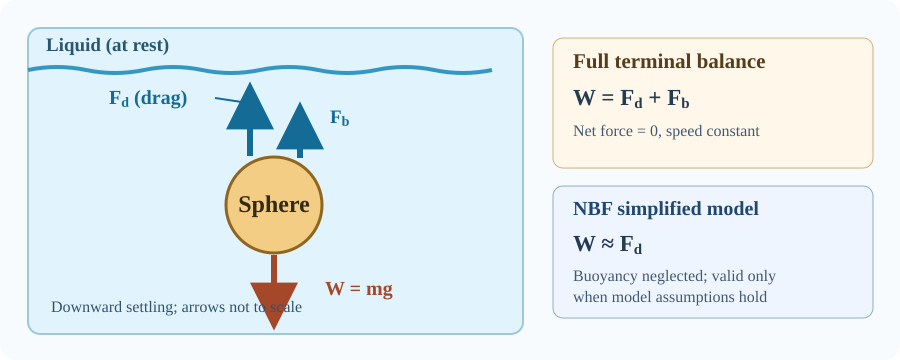

Honey and water
Under comparable geometry, head and temperature, honey generally drains more slowly because it is more viscous. Do not infer exact draining times from viscosity alone.
GRADE XI · FLUID MECHANICS · TOPIC 6.2
Understand resistance inside real fluids, distinguish drag in liquids and gases, follow the sphere’s terminal-speed derivation and learn why a correct model calculation can still be physically unsuitable.
V95-B2 public study preview — not a completed or officially approved Unit 6 course. Prepared from the private Topic 6.2 teaching master (combined pp. 65–98), the V94-C2.2 academic audit and the supplied official FBISE framework. These are new teaching explanations, not an NBF textbook reproduction. Original printed NBF pp. 91–95, Figure 6.4, Table 6.1 and exact Example 6.2/Assignment 6.2 wording still need comprehensive independent source matching. Per-MCQ SLO/cognitive certification remains pending.
These outcome-level assessments and cognitive levels were checked against the teacher-supplied FBISE HSSC-I framework, PDF p.12. The extended algebra and model diagnostics below aid understanding and must not be advertised as separately prescribed official derivations or individually certified exam questions.
01 · NATURE OF REAL FLUIDS
A real fluid resists relative sliding of its neighbouring layers. This internal resistance is called viscosity. It applies to both liquids and gases and affects how easily they flow under a given driving pressure or gravitational force.
Under comparable geometry, head and temperature, honey generally drains more slowly because it is more viscous. Do not infer exact draining times from viscosity alone.
The dynamic viscosity of most common liquids decreases as their temperature rises. The effect is material- and condition-dependent.
For most gases, dynamic viscosity generally increases with temperature. The textbook comparison must be read as a common trend, not an exceptionless law.
The coefficient of dynamic viscosity is written η (eta). Its SI unit is the pascal-second:
When an object moves through a fluid, the fluid exerts a drag force opposite to the object’s velocity relative to that fluid. Drag in air is aerodynamic; drag in a liquid is hydrodynamic. Their actual magnitudes depend on the object's speed, size, shape, flow regime and fluid properties.
02 · A SPECIAL SLOW-FLOW MODEL
For a sphere moving sufficiently slowly relative to a Newtonian viscous fluid, when flow is in the creeping-flow regime, the magnitude of its drag is approximately:
With other quantities fixed and the model still applicable, doubling η, r or v doubles the drag predicted by this particular formula. It is not the drag law for a parachute, bird, car, swimmer or arbitrary fast-moving object.
The SI dimensions are consistent: [ηrv] = (kg m⁻¹ s⁻¹)(m)(m s⁻¹) = kg m s⁻² = N. However, dimensional analysis cannot derive the numerical coefficient 6π; that coefficient comes from the appropriate viscous-flow solution, beyond the school derivation.
A numerical result can be algebraically correct without being an accurate real-world drag prediction. We will see this distinction in the prepared Example 6.2 and Assignment 6.2 below.
03 · FORCE BALANCE DERIVATION
A falling object initially gains speed because downward weight exceeds upward resistance. As relative speed rises, drag tends to increase. At terminal velocity, the total vertical force is zero, acceleration is zero, and the object continues falling at a constant nonzero speed. Gravity and drag do not disappear.

In the simplified NBF model, take downward as positive and ignore fluid buoyancy. For a spherical object of mass m and radius r:
04 · CLEARLY LABELLED EXTENSION
Archimedes’ principle from Topic 6.1 gives an upward buoyant force Fb = ρfluidVg. A small sphere settling in a liquid experiences weight downward, with buoyancy and drag upward. At terminal settling speed, the complete balance is:
For a settling sphere denser than the fluid, substituting V = (4/3)πr³ gives a supplementary buoyancy-inclusive formula:
If sphere and fluid densities match, this ideal model has no net gravitational settling tendency. If the sphere is less dense, its net buoyancy tends upward; a signed velocity must then be interpreted using a consistent direction convention.
05 · REAL-WORLD DRAG AND GRAPH READING
Opening a parachute suddenly increases effective aerodynamic resistance. Drag may then exceed weight, causing an upward acceleration while the parachutist is still descending. Downward speed decreases until a lower terminal descent speed is reached.
The prepared source describes the NBF Figure 6.5(c) as approximately 50 m/s before opening, opening near 42 s, decreasing to about 8 m/s in roughly 5 s, and landing near 70 s. These are approximate illustrative graph readings, not universal parachuting data or experimental constants.
Flying geese in a V formation may gain aerodynamic benefits from neighbouring birds' wake flow; swimmers change their posture and body orientation to control water resistance. These are qualitative drag illustrations, not situations where the spherical Stokes law may be applied directly.
Study the independently authored parachutist graph Review the original geese illustration
06 · SOLVED EXERCISES
The first two problem sets use values attributed in the teacher-prepared master to NBF Example 6.2 and Assignment 6.2. The source data and resulting school-model answers are checked, but the original printed wording has not been exhaustively compared to NBF pp. 94–95. These are not verbatim textbook transcriptions. Remaining examples are explicitly supplementary.
A sphere of radius 2 mm moves through air at 2 m/s. Use the supplied η = 1.9 × 10⁻⁵ Pa·s and the Stokes expression to calculate drag.
Compulsory physical warning: With supplementary typical air density ρ ≈ 1.2 kg/m³, Re ≈ 505. The creeping-flow assumption (Re ≪ 1) is not fulfilled. Retain the prepared numerical answer for the school-model algebra, but do not claim it is verified real aerodynamic drag.
A raindrop of radius 0.3 mm falls through air of viscosity 1.8 × 10⁻⁵ Pa·s. Calculate the school-model terminal speed, explicitly assuming ρdrop = 1000 kg/m³ and g = 9.8 m/s², and neglecting buoyancy.
Compulsory source/model warning: The prepared record says the original assignment does not state the raindrop density. The 1000 kg/m³ value above is an added assumption. With supplementary air density 1.2 kg/m³, this formal speed implies Re ≈ 436; 10.9 m/s is not a reliable physical prediction for this raindrop.
Suppose Fd = 3.0 × 10⁻⁶ N, radius r = 0.50 mm and relative speed v = 0.020 m/s. Find the viscosity that the Stokes model would imply.
A sphere has density 1200 kg/m³, radius 50 μm, and moves through a liquid of density 1000 kg/m³ and dynamic viscosity 0.10 Pa·s. Find its predicted terminal settling speed.
For the prepared graph’s approximate 50 m/s before opening and 8 m/s after the transition:
Do not apply Stokes’ sphere formula to a parachutist. This is a schematic graph, not a measured flight dataset.
07 · INTERACTIVE MODEL VALIDITY
Try a very slow sphere in a viscous liquid, or load the textbook-style Example 6.2 inputs. The tool calculates a formal Stokes drag and a supplementary Reynolds diagnostic. It does not simulate an actual aerodynamically accurate high-speed sphere or certify real measurements.
Inputs are processed on your device only; no grade, name, account activity, form data or result is sent to a server. For high Reynolds numbers the calculated force is labelled a formal, invalid-as-a-real-prediction Stokes expression rather than a reliable drag.
08 · REVISE & REFLECT
Both liquids and gases have viscosity. For many common liquids viscosity falls with heating; for many gases it rises with heating.
No. Its acceleration is zero because the forces balance, but it can continue falling at a nonzero constant speed.
No. Dimensional analysis establishes a consistent force dimension for ηrv but cannot supply the numerical coefficient 6π.
When appreciable buoyancy is neglected, when the body is not a sphere or when flow is outside the creeping-flow regime. The corrected density-difference expression still requires slow flow.
Air resistance increases because the canopy changes effective area and flow. Drag may exceed weight temporarily, slowing downward motion until a lower terminal speed is reached.
No. It is the output of the specified simplified equation using an assumed raindrop density. The corresponding Reynolds number is much larger than 1, violating Stokes creeping-flow applicability.
Dynamic viscosity: Pa·s = kg/(m·s)
Slow-sphere drag: Fd = 6πηrv
Textbook terminal force: mg = 6πηrvt
Textbook terminal speed: vt = 2ρspheregr²/(9η)
Buoyancy extension: vt = 2(ρsphere − ρfluid)gr²/(9η)
Supplementary validity: Re = 2ρfluidvr/η ≪ 1
Use the existing Viscosity and Terminal Velocity simulation, then practise the original provisional 80 MCQs and review the accessible V90 educational figure study.
Source record: private prepared master Topic 6.2 (combined pp. 65–98), merged V94-C2.2 audit, official FBISE framework pp. 11–12. Worked examples reproduce stated numeric givens only as new pedagogical explanations. All original textbook scans/figures, master study PDF and source item-level official certification are outside this preview; final teacher signoff pending.